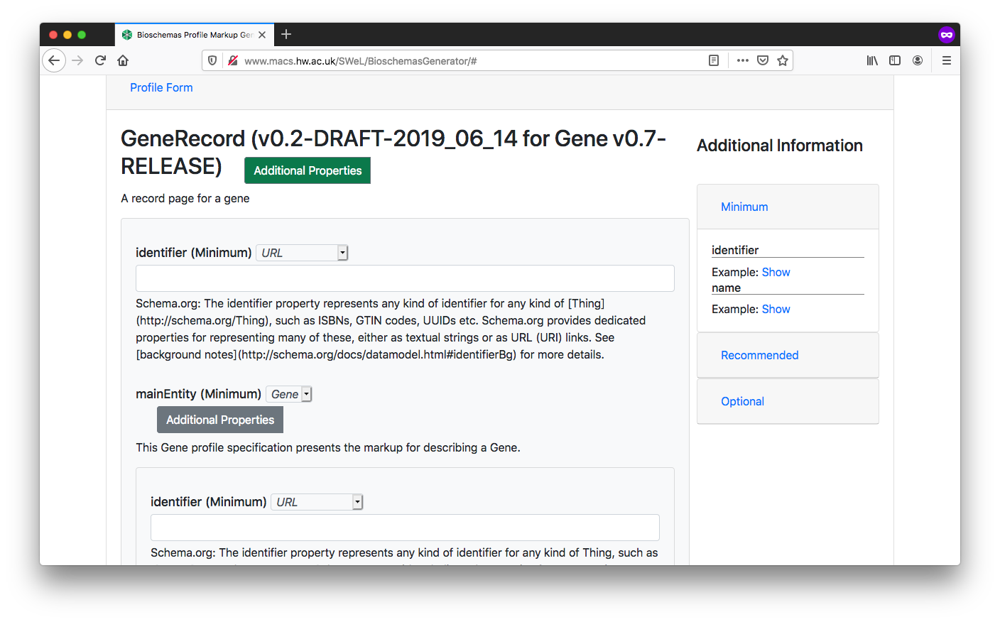

    <main class="jupyter-page">
    <div class="jb_cell">

<div class="cell border-box-sizing text_cell rendered"><div class="inner_cell">
<div class="text_cell_render border-box-sizing rendered_html">
<h1 id="Findability:-Data-Page-Markup-with-Bioschemas">Findability: Data Page Markup with Bioschemas<a class="anchor-link" href="#Findability:-Data-Page-Markup-with-Bioschemas"> </a></h1><!-- **identifier:** [RX.X](RX.X)

**version:** [v0.1](v0.1)

___

**_Difficulty level:_** :triangular_flag_on_post: :white_circle: :white_circle:  :white_circle:  :white_circle:

**_Reading time:_** 10 minutes

**_Intended Audience:_**

> :heavy_check_mark: Application Developer

> :heavy_check_mark: Data Scientist

**_Recipe Type_**: Guidance

**_Executable code_**: No -->

<hr>
<div class="row">

  <div class="column">
    <div class="card">
      <div class="container">
        <i class="fa fa-qrcode fa-2x" style="color:#7e0038;"></i>
        <h4><b>Recipe metadata</b></h4>
        <p> identifier: <a href="">RX.X</a> </p>
        <p> version: <a href="">v0.1</a> </p>
      </div>
    </div>
  </div>
  <div class="column">
    <div class="card">
      <div class="container">
        <i class="fa fa-fire fa-2x" style="color:#7e0038;"></i>
        <h4><b>Difficulty level</b></h4>
        <i class="fa fa-fire fa-lg" style="color:#7e0038;"></i>
        <i class="fa fa-fire fa-lg" style="color:#7e0038;"></i>
        <i class="fa fa-fire fa-lg" style="color:lightgrey"></i>
        <i class="fa fa-fire fa-lg" style="color:lightgrey"></i>
        <i class="fa fa-fire fa-lg" style="color:lightgrey"></i>
  <!--       <p><span data-v-013baba1="" title="" class=""><svg data-v-013baba1="" viewBox="0 0 16 16" width="1em" height="1em" focusable="false" role="img" alt="icon" xmlns="http://www.w3.org/2000/svg" fill="currentColor" class="bi-bar-chart-fill b-icon bi medium-level"><g data-v-013baba1=""><rect width="4" height="5" x="1" y="10" rx="1"></rect><rect width="4" height="9" x="6" y="6" rx="1"></rect><rect width="4" height="14" x="11" y="1" rx="1"></rect></g></svg> Medium </span></p> -->
      </div>
    </div>
  </div>  
  <div class="column">
    <div class="card">
      <div class="container">
        <i class="fa fa-clock-o fa-2x" style="color:#7e0038;"></i>
        <h4><b>Reading Time</b></h4>
        <p><i class="fa fa-clock-o fa-lg" style="color:#7e0038;"></i> 10 minutes</p>
        <h4><b>Recipe Type</b></h4>
        <p><i class="fa fa-globe fa-lg" style="color:#7e0038;"></i> Guidance</p>
        <h4><b>Executable Code</b></h4>
        <p><i class="fa fa-play-circle" style="color:#fc7a4a;"></i> No</p>
      </div>
    </div>
  </div>
  <div class="column">
    <div class="card">
      <div class="container">
        <i class="fa fa-group fa-2x" style="color:#7e0038;"></i>
        <h4><b>Intended Audience</b></h4>
<!--         <p> <i class="fa fa-user-md fa-lg" style="color:#7e0038;"></i> Principal Investigators </p> -->
        <p> <i class="fa fa-cogs fa-lg" style="color:#7e0038;"></i> Software Developers </p>
        <p> <i class="fa fa-wrench fa-lg" style="color:#7e0038;"></i> Data Scientists </p>
 <!--        <p> <i class="fa fa-money fa-lg" style="color:#7e0038;"></i> Funders</p> -->
      </div>
    </div>
  </div>
</div><hr>
<h1 id="Table-of-Contents">Table of Contents<a class="anchor-link" href="#Table-of-Contents"> </a></h1><ol>
<li><a href="#Main%20Objectives">Main FAIRification Objectives</a></li>
<li><a href="#Graphical%20Overview%20of%20the%20FAIRification%20Recipe%20Objectives">Graphical Overview of the FAIRification Recipe Objectives</a></li>
<li><a href="#FAIRification%20Objectives,%20Inputs%20and%20Outputs">FAIRification Objectives, Inputs and Outputs</a></li>
<li><a href="#Capability%20&amp;%20Maturity%20Table">Capability &amp; Maturity Table</a></li>
<li><a href="#Table%20of%20Data%20Standards">Table of Data Standards</a></li>
<li><a href="#Executable%20Code%20in%20Notebook">Executable Code in Notebook</a></li>
<li><a href="#How%20to%20create%20workflow%20figures">How to create workflow figures</a></li>
<li><a href="#License">License</a></li>
</ol>
<hr>
<h2 id="Main-Objectives">Main Objectives<a class="anchor-link" href="#Main-Objectives"> </a></h2><p>The main purpose of this recipe is:</p>
<blockquote><p>To markup a webpage representing a data record with <code>Bioschemas</code> compliant markup.</p>
</blockquote>
<hr>
<h2 id="Graphical-Overview-of-the-FAIRification-Recipe-Objectives">Graphical Overview of the FAIRification Recipe Objectives<a class="anchor-link" href="#Graphical-Overview-of-the-FAIRification-Recipe-Objectives"> </a></h2><!--
[](https://mermaid-js.github.io/mermaid-live-editor/#/edit/eyJjb2RlIjoiZ3JhcGggVERcbiBBKEhUTUwgcGFnZSk6Ojpib3ggLS0-IHxDcmVhdGUgbWFya3VwIHRlbXBsYXRlfCBCe3doYXQgdHlwZSA8YnI-IG9mIHJlc291cmNlID99Ojo6Ym94XG4gQiAtLT4gQyhDaGVtaWNhbCBTdWJzdGFuY2UpOjo6Ym94XG4gQiAtLT4gRChHZW5lKTo6OmJveFxuIEIgLS0-IEUoTW9sZWN1bGFyIEVudGl0eSk6Ojpib3hcbiBCIC0tPiBGKFByb3RlaW4pOjo6Ym94XG4gQiAtLT4gRyhTYW1wbGUpOjo6Ym94XG4gQiAtLT4gSChUYXhvbik6Ojpib3hcbiBDIC0tPiBJXG4gRCAtLT4gSVxuIEUgLS0-IElcbiBGIC0tPiBJXG4gRyAtLT4gSVxuIEggLS0-IEkoTWFya3VwIHRlbXBsYXRlKTo6OmJveFxuIEkgLS0-IHxFbWJlZCB0ZW1wbGF0ZSBpbiB3ZWJzaXRlfCBKKGZhOmZhLXNlYXJjaCBmYTpmYS1jb2cgZmE6ZmEtZmlnaHRlci1qZXQgU2NoZW1hLm9yZyBhdWdtZW50ZWQgSFRNTCBwYWdlKTo6OmJveFxuICBjbGFzc0RlZiBib3ggZm9udC1mYW1pbHk6YXZlbmlyLGZvbnQtc2l6ZToxNHB4LGZpbGw6IzJhOWZjOSxzdHJva2U6IzIyMixjb2xvcjojZmZmLHN0cm9rZS13aWR0aDoxcHhcbiBsaW5rU3R5bGUgMCwxLDIsMyw0LDUsNiw3LDgsOSwxMCwxMSwxMiwxMyBzdHJva2U6IzJhOWZjOSxzdHJva2Utd2lkdGg6MXB4LGNvbG9yOiMyYTlmYzksZm9udC1mYW1pbHk6YXZlbmlyOyIsIm1lcm1haWQiOnsidGhlbWUiOiJkZWZhdWx0In19)
-->

<div class="mermaid">
graph TD
 A(HTML page):::box --> |Create markup template| B{what type <br> of resource ?}:::box
 B --> C(Chemical Substance):::box
 B --> D(Gene):::box
 B --> E(Molecular Entity):::box
 B --> F(Protein):::box
 B --> G(Sample):::box
 B --> H(Taxon):::box
 C --> I
 D --> I
 E --> I
 F --> I
 G --> I
 H --> I(Markup template):::box
 I --> |Embed template in website| J(fa:fa-search fa:fa-cog fa:fa-fighter-jet Schema.org augmented HTML page):::box
  classDef box font-family:avenir,font-size:14px,fill:#2a9fc9,stroke:#222,color:#fff,stroke-width:1px
 linkStyle 0,1,2,3,4,5,6,7,8,9,10,11,12,13 stroke:#2a9fc9,stroke-width:1px,color:#2a9fc9,font-family:avenir;
</div><hr>
<h2 id="Capability-&amp;-Maturity-Table">Capability &amp; Maturity Table<a class="anchor-link" href="#Capability-&amp;-Maturity-Table"> </a></h2><table>
<thead><tr>
<th style="text-align:left">Capability</th>
<th style="text-align:left">Initial Maturity Level</th>
<th style="text-align:left">Final Maturity Level</th>
</tr>
</thead>
<tbody>
<tr>
<td style="text-align:left">Findability</td>
<td style="text-align:left">minimal</td>
<td style="text-align:left">repeatable</td>
</tr>
<tr>
<td style="text-align:left">Interoperability</td>
<td style="text-align:left">minimal</td>
</tr>
</tbody>
</table>
<hr>
<h2 id="Method">Method<a class="anchor-link" href="#Method"> </a></h2><p>We will outline the steps for marking up a page in your site. As a specific example, we will use the Wikidata page for <a href="https://www.wikidata.org/wiki/Q227339">BRCA1</a>.</p>
<ol>
<li><p>Identify a data page in your site for which you will develop markup</p>
</li>
<li><p>Open the <a href="http://www.macs.hw.ac.uk/SWeL/BioschemasGenerator/">Bioschemas Generator</a></p>
<ol>
<li><p>Select the type of data page that you are marking up. In the example we will use <code>GeneRecord</code>. Here are the main data record profiles to choose from <sup>[1](#draft-profiles)</sup>.</p>
<ul>
<li><p><code>ChemicalSubstanceRecord</code> for a page about a chemical substance composed of molecular entities</p>
</li>
<li><p><code>GeneRecord</code> for a page about a gene</p>
</li>
<li><p><code>MolecularEntityRecord</code> for a page about a single molecular entity</p>
</li>
<li><p><code>ProteinRecord</code> for a page about a protein</p>
</li>
<li><p><code>Sample</code> for a page about a biological sample</p>
</li>
<li><p><code>Taxon</code> for a page about a taxon</p>
</li>
</ul>
</li>
<li><p>Enter the URL of the page in URL box, e.g. <code>https://www.wikidata.org/wiki/Q227339</code></p>
</li>
<li><p>Click on the <code>Show Form</code> button</p>
</li>
</ol>
<p></p>
</li>
<li><p>Complete the profile form with the data relevant for your page. Once completed, click on the <code>Generate Markup</code>  button</p>
<ul>
<li>You should complete all <em>Minimum</em> properties and as many <em>Recommended</em> properties as possible. You can show/hide properties using the <code>Additional Properties</code> buttons.</li>
<li>The form defaults to the data type with the first alphabetical character, e.g. for <code>identifier</code> this defaults to <code>PropertyValue</code> but <code>Text</code> or <code>URL</code> will be more appropriate in most cases</li>
<li>For XXXRecord pages, the first <code>identifier</code> property refers to the web page while the second <code>identifier</code> property refers to the chemical, gene, protein, ...</li>
<li>The right side of the screen gives examples for properties, where these have been provided by the Bioschemas profile authors. Click on the <code>Show</code> button to see the example for a specific property. Click on <code>Minimum</code>, <code>Recommended</code>, or <code>Optional</code> to expand/contract the section and see the properties contained at that marginality level</li>
</ul>
<p></p>
</li>
<li><p>You should now see the generated markup in <code>JSON-LD</code> format. You can click on the <code>Microdata</code> and <code>RDFa</code> tabs to see the same content rendered in the different formats. However, we recommend the use of <code>JSON-LD</code>. For our Wikidata example, we get the following markup</p>
<div class="highlight"><pre><span></span><span class="err">&lt;script</span> <span class="err">type=</span><span class="s2">&quot;application/ld+json&quot;</span> <span class="err">&gt;</span>
  <span class="p">{</span>
    <span class="nt">&quot;@context&quot;</span><span class="p">:</span> <span class="s2">&quot;http://schema.org&quot;</span><span class="p">,</span>
    <span class="nt">&quot;@id&quot;</span><span class="p">:</span> <span class="s2">&quot;https://www.wikidata.org/wiki/Q227339&quot;</span><span class="p">,</span>
    <span class="nt">&quot;@type&quot;</span><span class="p">:</span> <span class="s2">&quot;DataRecord&quot;</span><span class="p">,</span>
    <span class="nt">&quot;dct:conformsTo&quot;</span><span class="p">:</span> <span class="s2">&quot;https://bioschemas.org/profiles/DataRecord/0.2-DRAFT-2019_06_14&quot;</span><span class="p">,</span>
    <span class="nt">&quot;identifier&quot;</span><span class="p">:</span> <span class="s2">&quot;https://www.wikidata.org/wiki/Q227339&quot;</span><span class="p">,</span>
    <span class="nt">&quot;mainEntity&quot;</span><span class="p">:</span> <span class="p">{</span>
      <span class="nt">&quot;@type&quot;</span><span class="p">:</span> <span class="s2">&quot;Gene&quot;</span><span class="p">,</span>
      <span class="nt">&quot;dct:conformsTo&quot;</span><span class="p">:</span> <span class="s2">&quot;https://bioschemas.org/profiles/Gene/0.7-RELEASE&quot;</span><span class="p">,</span>
      <span class="nt">&quot;identifier&quot;</span><span class="p">:</span> <span class="s2">&quot;Q227339&quot;</span><span class="p">,</span>
      <span class="nt">&quot;description&quot;</span><span class="p">:</span> <span class="s2">&quot;protein-coding gene in the species Homo sapiens&quot;</span><span class="p">,</span>
      <span class="nt">&quot;encodesBioChemEntity&quot;</span><span class="p">:</span> <span class="p">{</span>
        <span class="nt">&quot;@type&quot;</span><span class="p">:</span> <span class="s2">&quot;BioChemEntity&quot;</span><span class="p">,</span>
        <span class="nt">&quot;@id&quot;</span><span class="p">:</span> <span class="s2">&quot;https://www.wikidata.org/wiki/Q17487737&quot;</span>
      <span class="p">},</span>
      <span class="nt">&quot;isPartOfBioChemEntity&quot;</span><span class="p">:</span> <span class="p">{</span>
        <span class="nt">&quot;@type&quot;</span><span class="p">:</span> <span class="s2">&quot;BioChemEntity&quot;</span><span class="p">,</span>
        <span class="nt">&quot;@id&quot;</span><span class="p">:</span> <span class="s2">&quot;https://www.wikidata.org/wiki/Q220677&quot;</span>
      <span class="p">},</span>
      <span class="nt">&quot;url&quot;</span><span class="p">:</span> <span class="s2">&quot;https://www.wikidata.org/wiki/Q227339&quot;</span><span class="p">,</span>
      <span class="nt">&quot;alternateName&quot;</span><span class="p">:</span> <span class="p">[</span>
        <span class="s2">&quot;breast cancer 1, early onset&quot;</span><span class="p">,</span>
        <span class="s2">&quot;BRCAI&quot;</span><span class="p">,</span>
             <span class="s2">&quot;BRCC1&quot;</span><span class="p">,</span>
             <span class="s2">&quot;BROVCA1&quot;</span><span class="p">,</span>
             <span class="s2">&quot;IRIS&quot;</span><span class="p">,</span>
             <span class="s2">&quot;PNCA4&quot;</span><span class="p">,</span>
             <span class="s2">&quot;PPP1R53&quot;</span><span class="p">,</span>
             <span class="s2">&quot;PSCP&quot;</span><span class="p">,</span>
             <span class="s2">&quot;RNF53&quot;</span><span class="p">,</span>
             <span class="s2">&quot;FANCS&quot;</span><span class="p">,</span>
             <span class="s2">&quot;breast cancer 1&quot;</span><span class="p">,</span>
             <span class="s2">&quot;BRCA1, DNA repair associated&quot;</span><span class="p">,</span>
             <span class="s2">&quot;BRCA1 DNA repair associated&quot;</span>
      <span class="p">],</span>
      <span class="nt">&quot;image&quot;</span><span class="p">:</span> <span class="p">{</span>
        <span class="nt">&quot;@type&quot;</span><span class="p">:</span> <span class="s2">&quot;ImageObject&quot;</span><span class="p">,</span>
        <span class="nt">&quot;@id&quot;</span><span class="p">:</span> <span class="s2">&quot;https://upload.wikimedia.org/wikipedia/commons/thumb/e/e1/Protein_BRCA1_PDB_1jm7.png/220px-Protein_BRCA1_PDB_1jm7.png&quot;</span>
      <span class="p">},</span>
      <span class="nt">&quot;taxonomicRange&quot;</span><span class="p">:</span> <span class="p">{</span>
        <span class="nt">&quot;@type&quot;</span><span class="p">:</span> <span class="s2">&quot;Taxon&quot;</span><span class="p">,</span>
        <span class="nt">&quot;@id&quot;</span><span class="p">:</span> <span class="s2">&quot;https://www.wikidata.org/wiki/Q15978631&quot;</span>
      <span class="p">},</span>
      <span class="nt">&quot;sameAs&quot;</span><span class="p">:</span> <span class="p">[</span>
        <span class="s2">&quot;https://meshb.nlm.nih.gov/#/record/ui?ui=D019398&quot;</span><span class="p">,</span>
        <span class="s2">&quot;https://www.ncbi.nlm.nih.gov/nuccore/NR_027676&quot;</span><span class="p">,</span>
        <span class="s2">&quot;http://identifiers.org/ensembl/ENSG00000012048&quot;</span><span class="p">,</span>
        <span class="s2">&quot;https://www.ncbi.nlm.nih.gov/gene/672&quot;</span>
      <span class="p">]</span>
    <span class="p">},</span>
    <span class="nt">&quot;sameAs&quot;</span><span class="p">:</span> <span class="p">[</span>
      <span class="s2">&quot;http://identifiers.org/ncbigene/672&quot;</span>
    <span class="p">]</span>
  <span class="p">}</span>
  <span class="err">&lt;/script</span> <span class="err">&gt;</span>
</pre></div>
</li>
<li><p>Download or copy and paste the generated markup</p>
</li>
<li><p>Make adjustments for any bits that could not be properly entered through the form.</p>
<p>For example, for our generated markup we would change</p>
<div class="highlight"><pre><span></span><span class="s2">&quot;encodesBioChemEntity&quot;</span><span class="err">:</span> <span class="p">{</span>
        <span class="nt">&quot;@type&quot;</span><span class="p">:</span> <span class="s2">&quot;BioChemEntity&quot;</span><span class="p">,</span>
        <span class="nt">&quot;@id&quot;</span><span class="p">:</span> <span class="s2">&quot;https://www.wikidata.org/wiki/Q17487737&quot;</span>
      <span class="p">}</span><span class="err">,</span>
</pre></div>
<p>to</p>
<div class="highlight"><pre><span></span><span class="s2">&quot;encodesBioChemEntity&quot;</span><span class="err">:</span> <span class="p">{</span>
        <span class="nt">&quot;@type&quot;</span><span class="p">:</span> <span class="s2">&quot;Protein&quot;</span><span class="p">,</span>
        <span class="nt">&quot;@id&quot;</span><span class="p">:</span> <span class="s2">&quot;https://www.wikidata.org/wiki/Q17487737&quot;</span>
      <span class="p">}</span><span class="err">,</span>
</pre></div>
<p>You can test that your JSON-LD is valid syntax, and visualise your markup using the <a href="https://json-ld.org/playground/">JSON-LD Playground</a>.</p>
</li>
<li><p>Once you are happy with your markup, include the <code>JSON-LD</code>, script tags and all, at the bottom of your HTML page template. Make sure that this is before the closing <code>&lt;/html&gt;</code> tag</p>
</li>
<li><p>Replace the values in your markup with variables that your web page templating system will replace with values from your database. For example, the follow snippet uses variables of the form <code>%%%PAGEURL%%%</code></p>
<div class="highlight"><pre><span></span><span class="err">&lt;script</span> <span class="err">type=</span><span class="s2">&quot;application/ld+json&quot;</span> <span class="err">&gt;</span>
  <span class="p">{</span>
    <span class="nt">&quot;@context&quot;</span><span class="p">:</span> <span class="s2">&quot;http://schema.org&quot;</span><span class="p">,</span>
    <span class="nt">&quot;@id&quot;</span><span class="p">:</span> <span class="s2">&quot;%%%PAGEURL%%%&quot;</span><span class="p">,</span>
    <span class="nt">&quot;@type&quot;</span><span class="p">:</span> <span class="s2">&quot;DataRecord&quot;</span><span class="p">,</span>
    <span class="nt">&quot;dct:conformsTo&quot;</span><span class="p">:</span> <span class="s2">&quot;https://bioschemas.org/profiles/DataRecord/0.2-DRAFT-2019_06_14&quot;</span><span class="p">,</span>
    <span class="nt">&quot;identifier&quot;</span><span class="p">:</span> <span class="s2">&quot;%%%PAGEURL%%%&quot;</span><span class="p">,</span>
    <span class="nt">&quot;mainEntity&quot;</span><span class="p">:</span> <span class="p">{</span>
      <span class="nt">&quot;@type&quot;</span><span class="p">:</span> <span class="s2">&quot;Gene&quot;</span><span class="p">,</span>
      <span class="nt">&quot;dct:conformsTo&quot;</span><span class="p">:</span> <span class="s2">&quot;https://bioschemas.org/profiles/Gene/0.7-RELEASE&quot;</span><span class="p">,</span>
      <span class="nt">&quot;identifier&quot;</span><span class="p">:</span> <span class="s2">&quot;%%%ACCESSIONNUMBER%%%&quot;</span><span class="p">,</span>
      <span class="nt">&quot;description&quot;</span><span class="p">:</span> <span class="s2">&quot;%%%DESCRIPTION%%%&quot;</span><span class="p">,</span>
      <span class="err">...</span>
  <span class="p">}</span>
</pre></div>
</li>
</ol>
<p>Your site should now generate data pages with embedded markup.</p>
<p>You should complete this process for each different type of data that you include in your site, e.g. ChEMBL would have <code>MolecularEntity</code> markup on their chemical pages and <code>Protein</code> markup on their target pages so would need to complete this process twice.</p>
<p>Once you have deployed this on your web server, you can test it with the <a href="http://www.macs.hw.ac.uk/SWeL/BioschemasValidator/">Bioschemas Validator</a> which scrapes the markup from your page and allows you to test it against various Bioschemas profiles<sup>[2](#bioschemas-validator)</sup>.</p>
<hr>
<h2 id="FAIRification-Objectives,-Inputs-and-Outputs">FAIRification Objectives, Inputs and Outputs<a class="anchor-link" href="#FAIRification-Objectives,-Inputs-and-Outputs"> </a></h2><table>
<thead><tr>
<th style="text-align:left">Actions.Objectives.Tasks</th>
<th style="text-align:left">Input</th>
<th style="text-align:left">Output</th>
</tr>
</thead>
<tbody>
<tr>
<td style="text-align:left"><a href="http://edamontology.org/operation_3778">text annotation</a></td>
<td style="text-align:left"><a href="https://fairsharing.org/FAIRsharing.20sbr9">Bioschemas</a></td>
<td style="text-align:left"><a href="http://edamontology.org/data_3779">annotated text</a></td>
</tr>
<tr>
<td style="text-align:left"><a href="http://edamontology.org/operation_2428">validation</a></td>
<td style="text-align:left"><a href="https://fairsharing.org/FAIRsharing.hzdzq8">schema.org</a></td>
<td style="text-align:left"><a href="http://edamontology.org/data_2048">report</a></td>
</tr>
</tbody>
</table>
<h2 id="Table-of-Data-Standards">Table of Data Standards<a class="anchor-link" href="#Table-of-Data-Standards"> </a></h2><table>
<thead><tr>
<th style="text-align:left">Data Formats</th>
<th style="text-align:left">Terminologies</th>
<th style="text-align:left">Models</th>
</tr>
</thead>
<tbody>
<tr>
<td style="text-align:left"><a href="http://edamontology.org/format_3749">JSON-LD</a></td>
<td style="text-align:left"><a href="https://fairsharing.org/FAIRsharing.20sbr9">Bioschemas</a></td>
<td style="text-align:left"><a href="http://edamontology.org/data_2353">RDF</a></td>
</tr>
<tr>
<td style="text-align:left"><a href="http://edamontology.org/format_2331">HTML</a></td>
<td style="text-align:left"></td>
</tr>
</tbody>
</table>
<hr>
<h2 id="Authors:">Authors:<a class="anchor-link" href="#Authors:"> </a></h2><table>
<thead><tr>
<th style="text-align:left">Name</th>
<th style="text-align:left">Affiliation</th>
<th style="text-align:left">orcid</th>
<th style="text-align:left">CrediT role</th>
</tr>
</thead>
<tbody>
<tr>
<td style="text-align:left">Alasdair Gray</td>
<td style="text-align:left">Bioschemas Community Lead / Heriot-Watt Unviersity / ELIXIR-UK</td>
<td style="text-align:left"><a href="https://orcid.org/0000-0002-5711-4872">0000-0002-5711-4872</a></td>
<td style="text-align:left">Writing - Original Draft</td>
</tr>
<tr>
<td style="text-align:left">Leyla Garcia</td>
<td style="text-align:left">Bioschemas Community / ZB MED Information Centre for life sciences, Knowledge Management Group</td>
<td style="text-align:left"><a href="https://orcid.org/0000-0003-3986-0510">0000-0003-3986-0510</a></td>
<td style="text-align:left">External review</td>
</tr>
</tbody>
</table>
<hr>
<h2 id="Footnotes">Footnotes<a class="anchor-link" href="#Footnotes"> </a></h2><p><a name="draft-profiles">1</a>: If you do not see your data type listed, tick the <code>Include Draft Profiles</code> to see if there is a draft profile for your data type. Otherwise contact the Bioschemas community to suggest development of a new profile.<br>
<a name="bioschemas-validator">2</a>: The Bioschemas Validator is currently in an early alpha release and does not include all the profiles.</p>
<hr>
<h2 id="License:">License:<a class="anchor-link" href="#License:"> </a></h2><p><a href="https://creativecommons.org/licenses/by/4.0/"></a></p>

</div>
</div>
</div>
</div>

 


    </main>
    